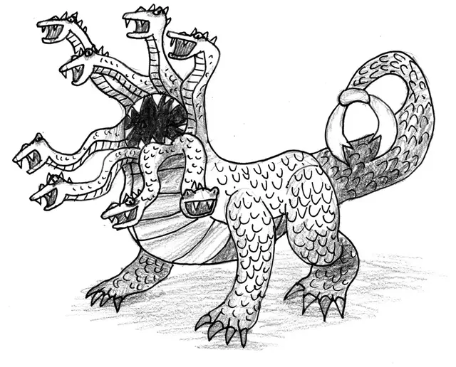

Фессалгидра
Thessalhydra
Огромный Монстр, без мировоззрения, именной НИП

Класс Доспеха 14 (природный доспех)
Хиты 69 (6к12 + 30)
Скорость 30 футов, плавая 30 футов
| мод | спас | ||
|---|---|---|---|
| СИЛ | 19 | +4 | +4 |
| ЛОВ | 12 | +1 | +1 |
| ТЕЛ | 20 | +5 | +5 |
| мод | спас | ||
|---|---|---|---|
| ИНТ | 5 | −3 | −3 |
| МДР | 10 | +0 | +0 |
| ХАР | 7 | −2 | −2 |
Навыки Восприятие +4
Иммунитет к урону кислота
Иммунитет к состояниям ослепление, очарование, глухота, испуг, ошеломление
Чувства тёмное зрение 60 футов, пассивное Восприятие 14
Опасность 4 (1100 опыта)
Бонус мастерства +2
Действия
Мультиатака. Фессалгидра совершает одну атаку пастью и одну шквалом укусов.
Шквал укусов. Рукопашная атака оружием: +7 к попаданию, досягаемость 10 футов, одно существо. Попадание: 7 (1к6 + 4) колющего урона плюс 10 (4к4) урона ядом.
Пасть. Рукопашная атака оружием: +7 к попаданию, досягаемость 5 футов, одно существо. Попадание: 9 (1к10 + 4) колющего урона плюс 5 (1к10) урона кислотой.
Хвостовой захват. Рукопашная атака оружием: +7 к попаданию, досягаемость 10 футов, одно существо. Попадание: 10 (1к12 + 4) рубящего урона и цель становится схваченной. Действием цель может вырваться преуспев в проверке Силы (Атлетика) или Ловкости (Акробатика) Сл 14. Пока цель схвачена, фессалгидра не может использовать захват хвостом.
Кислотный плевок (Перезарядка 5-6). Фессалгидра выплевывает кислоту в точку, которую видит в 30 футах от себя. Каждое существо в пределах 10 футов от этой точки должно совершить спасбросок Ловкости Сл 15, получая 18 (4к8) урона кислотой при провале или половину этого урона при успехе.
Легендарные действия
Фессалгидра может совершить 2 легендарных действия на выбор из перечисленных ниже вариантов. Лишь одно легендарное действие может быть совершено за один раз, и только в конце хода другого существа. Фессалгидра восстанавливает истраченные действия в начале своего хода.
Обнаружение. Фессалгидра с преимуществом совершает проверку Мудрости (Восприятие).
Взмах хвостом. Фессалгидра совершает атаку Хвостовым захватом.
Описание
Фессалгидра - странное и ужасное существо с восемью головами, окружающими большую круглую пасть, окаймленную заострёнными зубами. Из его пасти сочится кислота, а хвост заканчивается парой острых клешней. Фессалийская гидра прожорлива и вредна для любой окружающей среды.